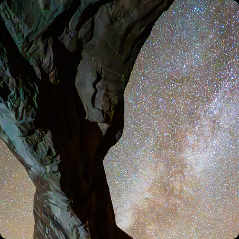
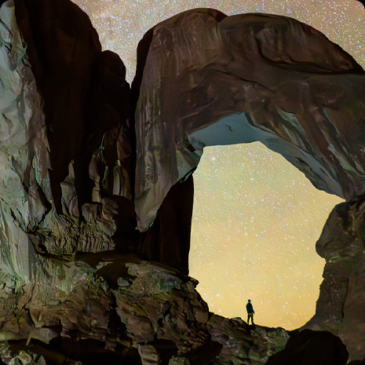

The world’s
most advanced
display.
OLED it shine
The Ultra Retina XDR display delivers extraordinary
full-screen brightness
and unparalleled precision built on breakthrough tandem
OLED technology.
The combined light of
two OLED panels
generates amazing brightness and
extreme dynamic range performance.
Peak visual
performance.
The color and luminance of each pixel is controlled
down to the submillisecond, enabling next‑level
XDR performance. The Ultra Retina XDR display is
even more responsive to content in motion.

Precision specular highlights
convey more true-to-life details
and accurate reflections of light in
every image. So breathtaking HDR
landscapes, textures, and tones
feel even more vibrant and
realistic.

2,000,000:1 contrast ratio
delivers deeper blacks for extreme
dynamic range. There is pinpoint
brightness in the stars and
incredible detail in low light
and shadows.
Nano-texture glass.
Brilliant in any light.
Nano‑texture display glass is a new option that’s
perfect for high‑end, color-
managed workflows or the most demanding ambient lighting
environments.
Precisely etched at a nanometer scale, nano‑texture
glass maintains image
quality and contrast while scattering ambient light
for
even less glare.